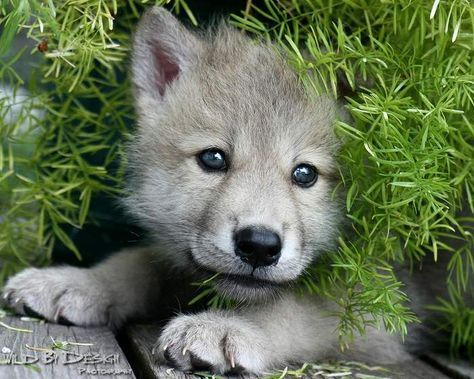
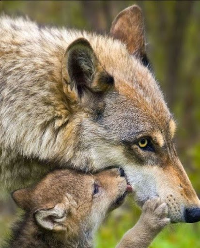
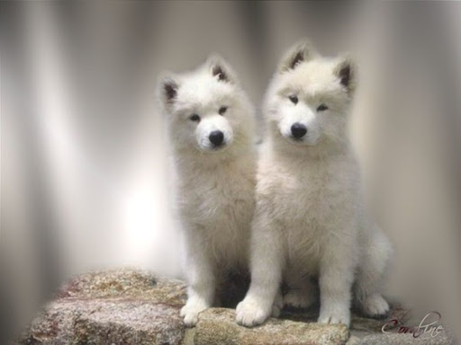
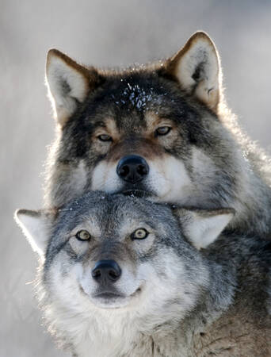
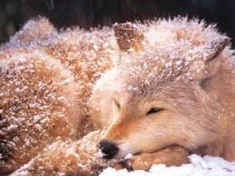
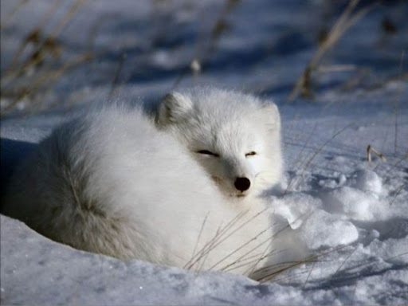
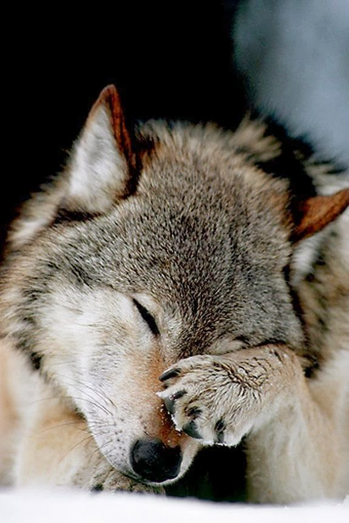
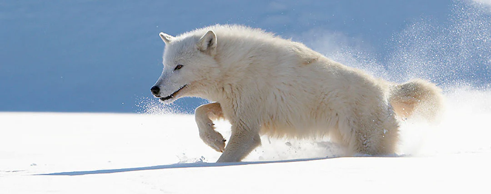
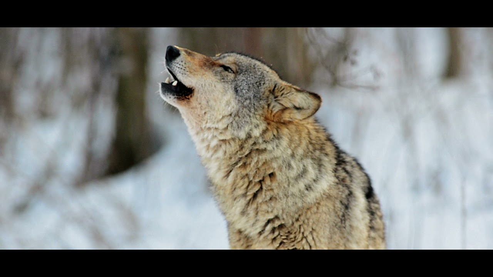

LES LOUP
Girls can definitely code
LOUVETAUX
  Sourds, aveugles et dépourvus d'odorat, ils se déplacent en rampant et en poussant de faibles cris. Le poids de naissance des louveteaux oscille entre 300 et 500 g. Durant trois semaines, les petits ne connaissent que la tanière. La louve est alimentée par le mâle dominant et par les autres membres de la meute
LOUP
     Comment décrire le loup ? Le loup appartient à la famille des canidés, comme le chien dont il est l'ancêtre très lointain.Sa taille varie entre 1 m et 1 m 40 et son pelage est gris, parfois beige ou brun pour certaines espèces. Le loup est un animal nocturne qui vit en meute dirigée la plupart du temps par un mâle dominant. Quel est la particularité du loup ?/> Le loup mue entre avril et mai, pour passer du poil d'hiver, très épais pouvant supporter des températures négatives, au poil d'été. Yeux : obliques et adaptés à la vision crépusculaire. Nez odorat très développé. Peut sentir à plusieurs kilomètres. Quel est l'habitat du loup ? Les populations de loups les plus importantes en Amérique du Nord, en Europe et en Asie se limitent surtout aux régions reculées en Europe de l'Est, en Asie du Nord, en Alaska et dans certaines parties du Canada. Quel est le mode de vie du loup ? En règle générale, les loups vivent en meute, qui représente une cellule familiale. Celle-ci est menée par le couple dominant, appelé alpha. Eux seuls sont autorisés à se reproduire. Ils régissent tous les aspects de la vie de la meute : déplacements, chasse, Comment définir le loup ? Mammifère carnivore, à pelage gris jaunâtre, vivant en meutes dans les forêts d'Europe, d'Asie et d'Amérique, appelé aussi loup gris ou loup commun. (Son cri est le hurlement. La femelle est la louve, le petit le louveteau. Famille des canidés.) Quelle est le comportement d'un loup ? Les loups sont des animaux très sociaux qui vivent en groupes familiaux cohérents, connus sous le nom de « meutes ». La meute comprend un couple d'adultes reproducteurs dominants et leurs louveteaux, ainsi que des loups âgés d'un an ou d'autres adultes. La meute se déplace, chasse et se repose souvent ensemble.